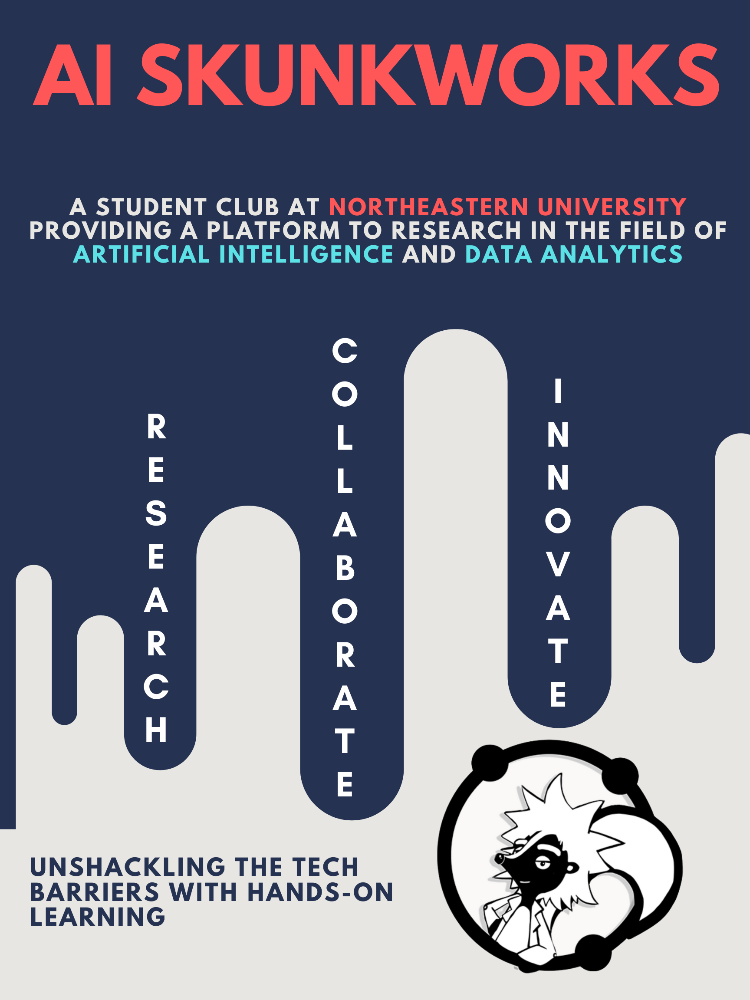
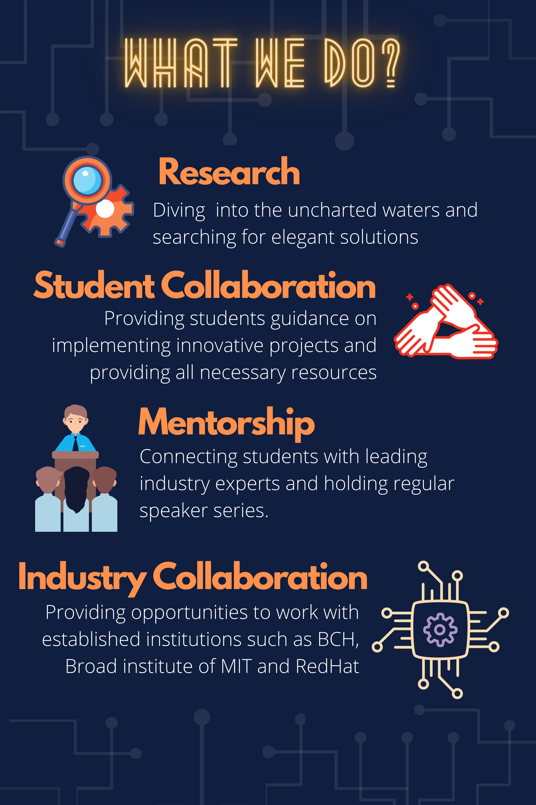
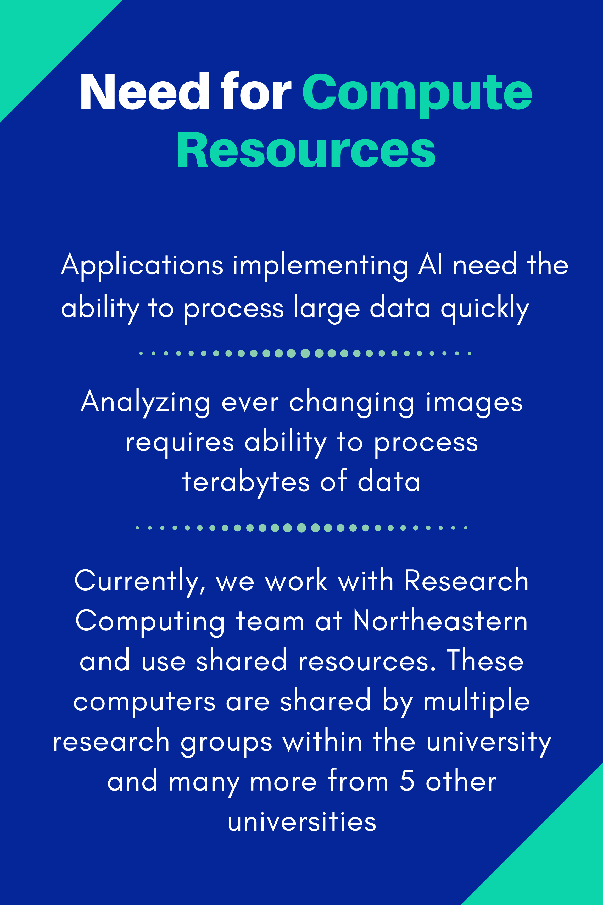
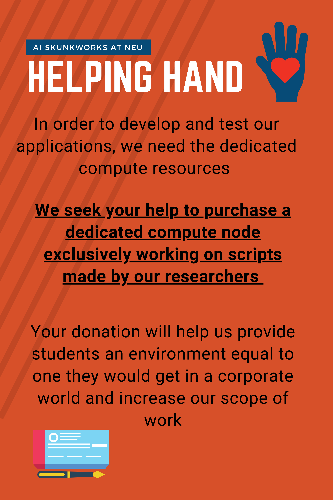

January 2021
Upcoming General Meeting on 01/27
We are pleased to announce our first General Meeting of Spring 2021, taking place on - Wednesday 01/27 at 6 pm.
Join the meeting using this link: https://northeastern.zoom.us/j/93365352396
We're Hiring!
We're looking to hire for new positions. From Research Heads to Board Members. Check it out down below
Join our E-board:
If you’re interested in joining and contributing to AI Skunkworks as an E-Board member, then fill up the form below :
https://bit.ly/3qYSO8r
Research Coordinators:
If you’re interested in contributing towards the Research Groups as Coordinator, then fill up the form below:
https://bit.ly/3iCFgwg
Joining any Research Group:
If you’re interested in any Research Groups, then fill up the form below:
https://bit.ly/3sU0pGP
December 2020
Husky Starters



